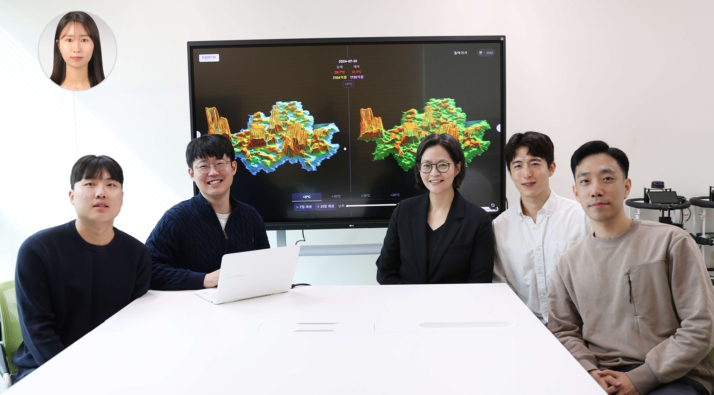

UAII in the Press

KAIST announced on October 29th that its Urban AI Institute (Director, Distinguished Professor Yoonjin Yoon of Civil and Environmental Engineering conducted joint research in the field of 'Urban AI' with MIT's Senseable City Lab (Director, Professor Carlo Ratti) and disclosed the results at the 'Smart Life Week 2025' exhibition held at COEX, Seoul, in late September. KAIST and MIT have been pursuing the 'Urban AI Joint Research Program' to interpret major urban problems using artificial intelligence. At this exhibition, the research results were presented in a form that citizens could directly experience, focusing on three themes: ▲Urban Climate Change, ▲Green Environment, and ▲Data Inclusivity.
View on press page
![[KRIHS가 만난 사람 98] 윤윤진 KAIST 도시AI연구소장 도시의 새로운 진화 AI 시티가 그리는 도시의 미래](assets/press/press2.jpg)